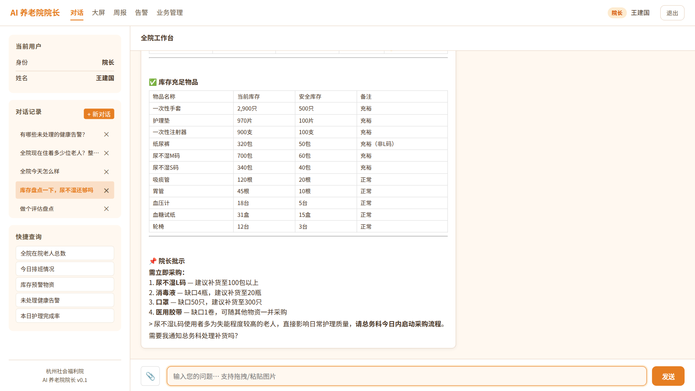
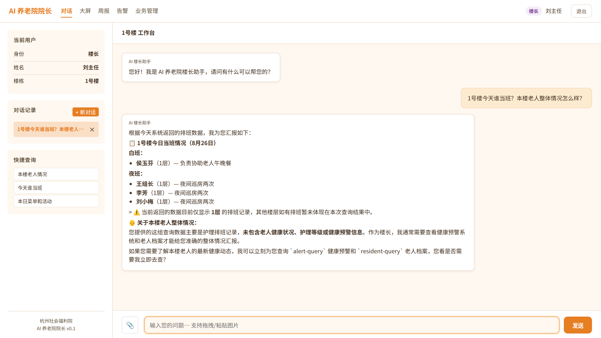
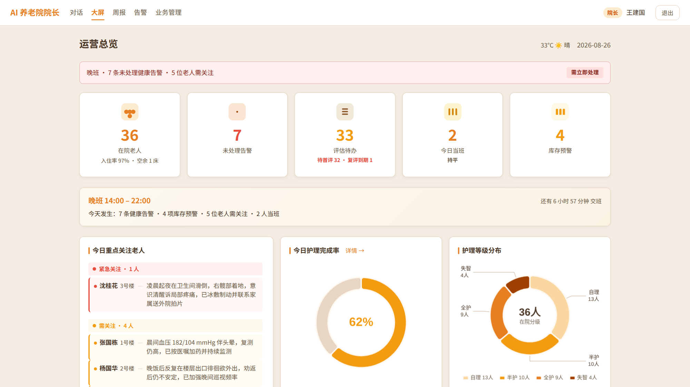
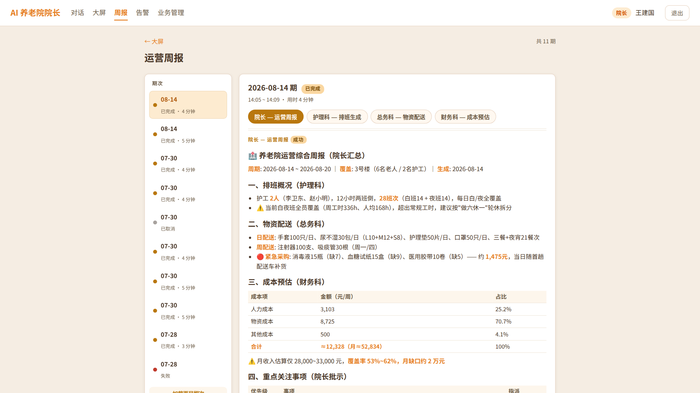
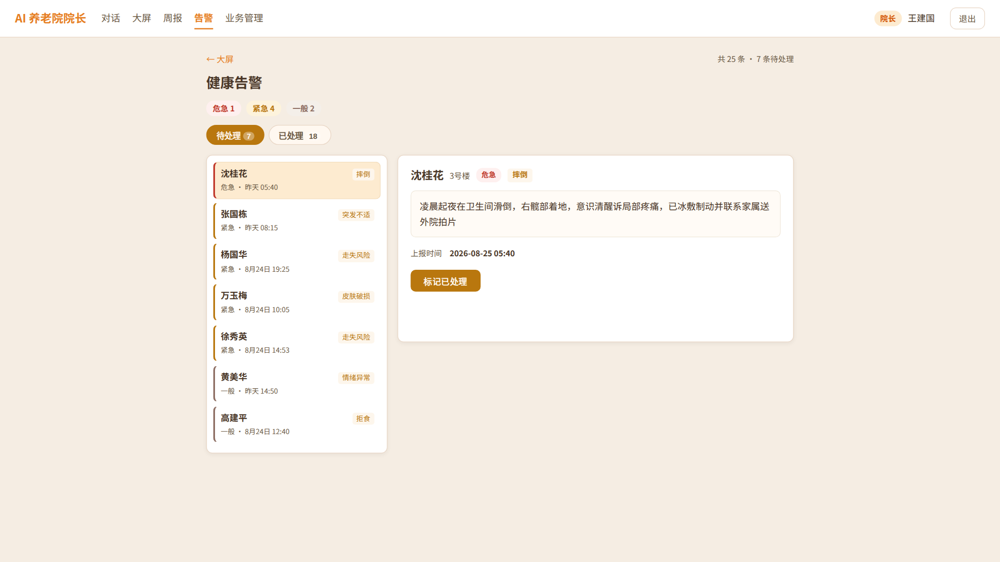
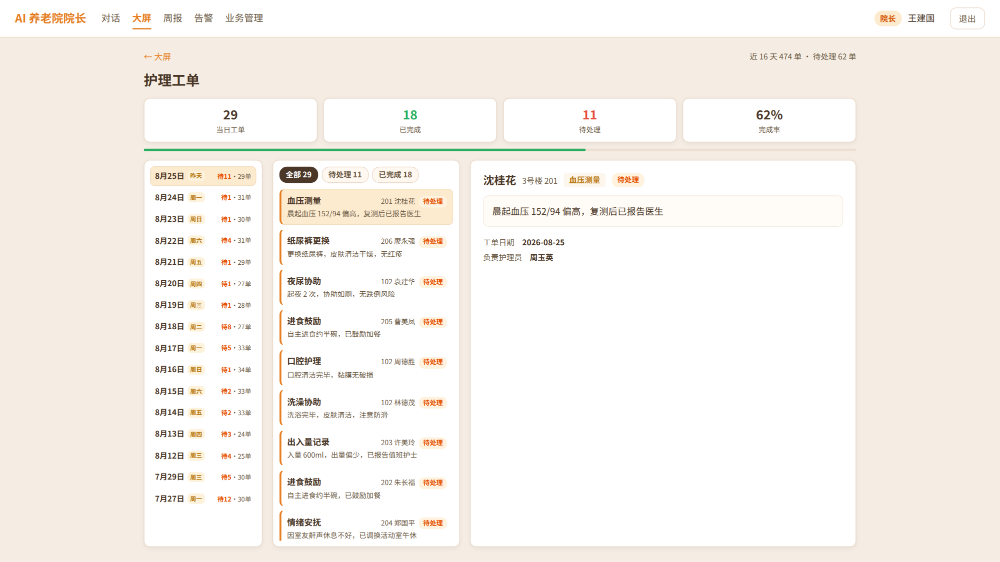
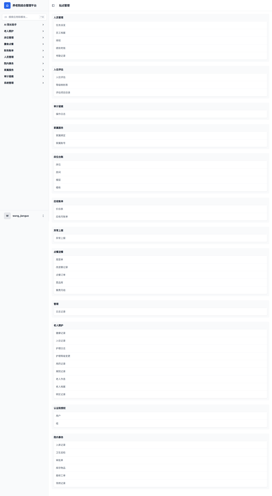
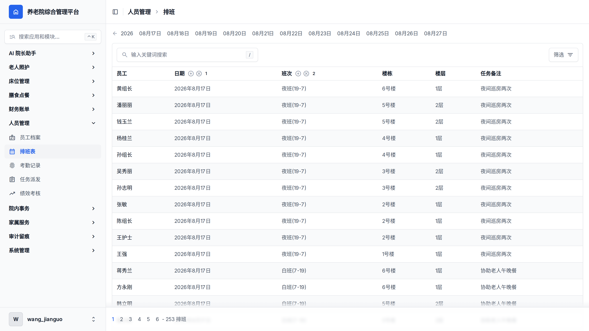
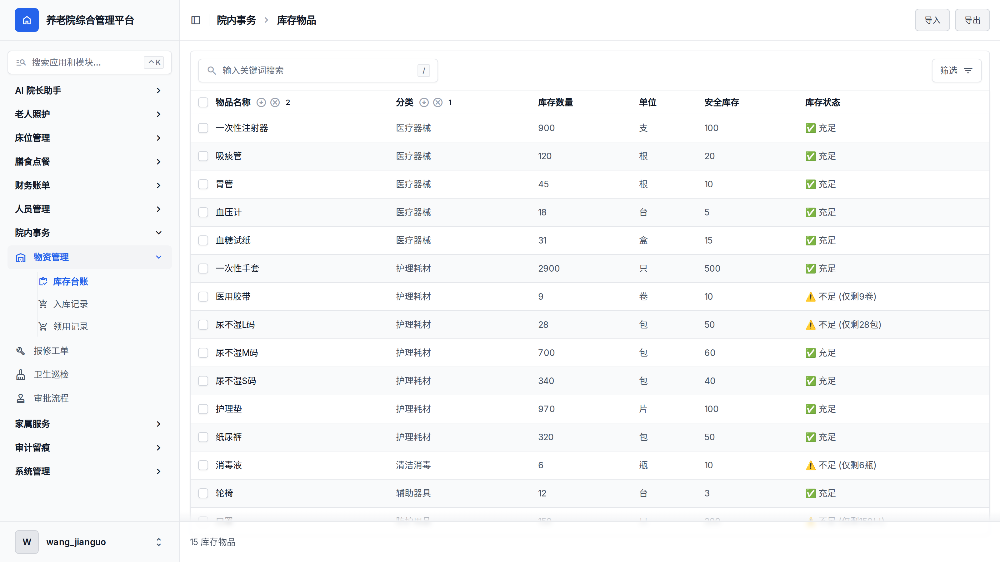

部署在养老院里的 AI 运营团队
千人规模养老院的瓶颈不在"缺系统"，而在人和信息对不上。
排班在 Excel 里、库存在本子上、老人的情况在护理员脑子里。想问"3 号楼今天谁当班"，要打三个电话。
院长周报要护理、总务、财务各自报数，人工汇总大半天，数字还常常对不齐。
老人的健康信号藏在日常照护细节里，发现不及时、上报靠自觉、处理无留痕。
传统 ERP 能存数据，但不会替你干活——查一个数要会系统、坐在电脑前、记得菜单在哪。
会用 AI 聊天 ≠ 运营流程被交付
每人以自己的身份对话，Agent 自动携带其科室、楼栋上下文——像真正的组织架构一样各司其职。

九类业务数据（排班 / 库存 / 老人档案 / 菜单 / 活动 / 财务 / 告警 / 评估 / 工单）问一句就出结果，支持表格化呈现——数据全部来自院内 ERP 真实业务库，不靠大模型"编"。

这是"数字员工"与"聊天机器人"的本质区别——它知道你是谁、你管什么。


部门之间不共享上下文、各自独立执行——与真实组织协作方式一致，出问题可定位到单一步骤。


AI 是这套系统最亮的工作面，但不是唯一的工作面——底下是一套完整的院内 ERP。


目录、字段、流程按科室结构与业务流配置，不是通用软件套壳。
浏览器打开即用，无需客户端与专项培训；iPad 床旁可直接操作。
ERP 独立交付，AI 在其上生长；也可先上 ERP，AI 后续叠加。
同一份数据，两个工作面——对话层问出来的，就是业务层记下来的。

Agent 每句回答查自 ERP 真实业务库；查不到就说"暂未查到"，不编数字。
对话里"标记已处理"直写 ERP 异常台账——处理人、时间自动署名留痕。
会用对话的走对话，习惯台账的走后台——一份数据，互不冲突。
Agent 的每一句回答都查自院内 ERP 真实业务库；数据对不上时宁可说"暂未查到"，不编数字。
老人的健康与照护数据是最敏感的个人信息——存储与计算全程留在院内；交付版本采用本地部署、特优化的开源大模型 Qwen3.8-27B，推理跑在院内一体机上，从模型到数据整链路不出院。
每个会话经角色门校验，员工 / 楼长 / 家属分流；全部操作进审计日志，数据库层行级权限控制。
部署演示环境按对接机构的真实运营体量构建。
从环境部署、ERP 数据对接，到 Agent 角色定制，
我们提供完整落地服务，欢迎预约现场或线上演示。